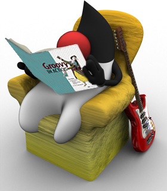
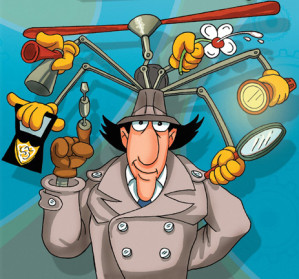
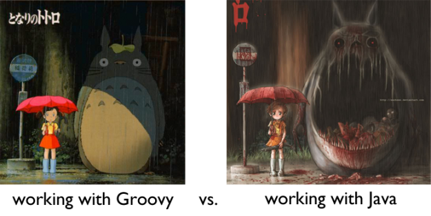
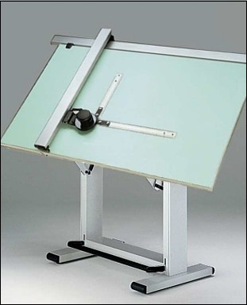

Java On Steroid
Du code Java, ou pas...
public class Pizza {
private String name;
public String getName() {
return name;
}
public void setName(String name) {
this.name = name;
}
public String what() {
return "Hello, you eat a " + name;
}
}
Pizza pizz = new Pizza();
pizza.setName("Cannibale");
System.out.println(pizza.what());
Le même, en groovy
public class Pizza {
String name;
String what() {
"Hello, you eat a #{name}"
}
}
def pizz = new Pizza(name: "Cannibale")
println perso.what()
Simple
Dynamique
Modern
Closure & Lambda
def oldThan18 = { it.age >= 18 }
def listOldUser = users.findAll(oldThan18);
DSL
take 15.min, of: pause, after: 1.hours
Complet !
En résumé...
Groovy, c'est comme Java
mais sans le costume trois pièces !
Guillaume Laforge
Groovy as Scripting
Groovy as Java Helper

Groovy as Project Technology
100% Compatible Java !
Swing, Servlet, ...
Mais on peut faire mieux !
Du Web avec Grails

- Full stacked
- Structure du code
- Scaffolding
- Plugins